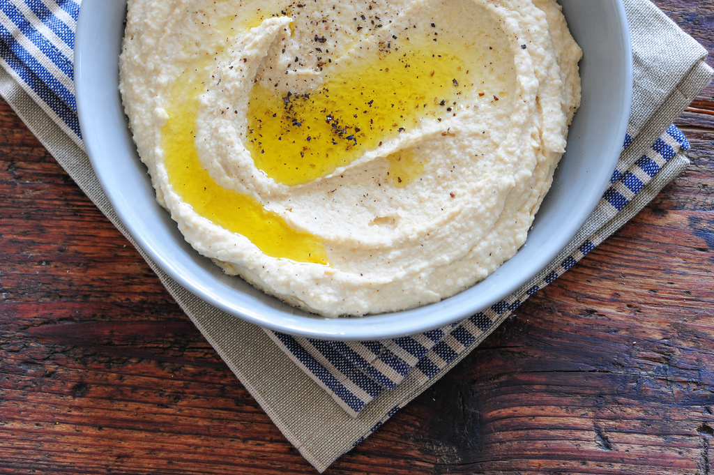
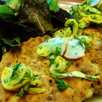

Menu
Appetizers
- Farinata: A light, crispy pancake made of chickpea flour and seasoned with rosemary and black pepper.
- Hummus: The classic chickpea dip. Ours has sriacha and lots of lemon. Served with pita and oil-cured black olives.
- White Bean Dip: Creamy cannelini beans mashed with olive oil, oregano, and lots of black pepper. Served with crostini and piave cheese
Soups
- Tuscan Bean: White bean soup with kale, sausage and pancetta.
- Cuban Black Bean: Spicy black bean soup with lime and cilantro.
- Red Lentil Dal: Indian red lentil soup seasoned with curry. Served with flakey paratha bread.
Sandwiches
- Falafel: The classic. Deep fried and crispy, loaded with cumin.
- White Bean Cake: White beans with rosemary, crisp on the outside and creamy in the middle. Served with house pickles.
Beans 'n Rice
- Beer glazed black beans: black beans Simmered in Flying Fish Oyster Stout, these spicy black beans are earthy and slightly sweet. Served with cornbread.
- Red beans and rice: The New Orleans classic, cooked with pickled pork and creole spices.



